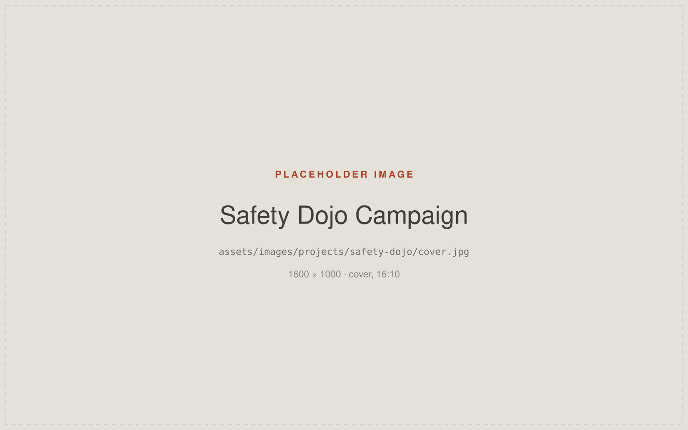
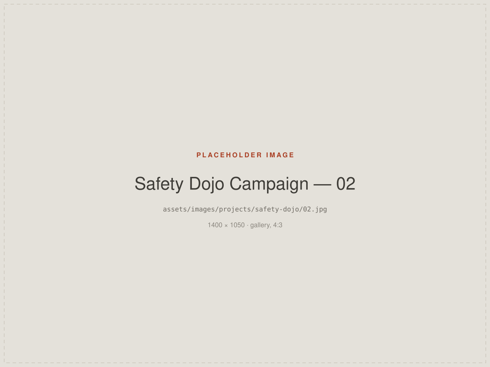
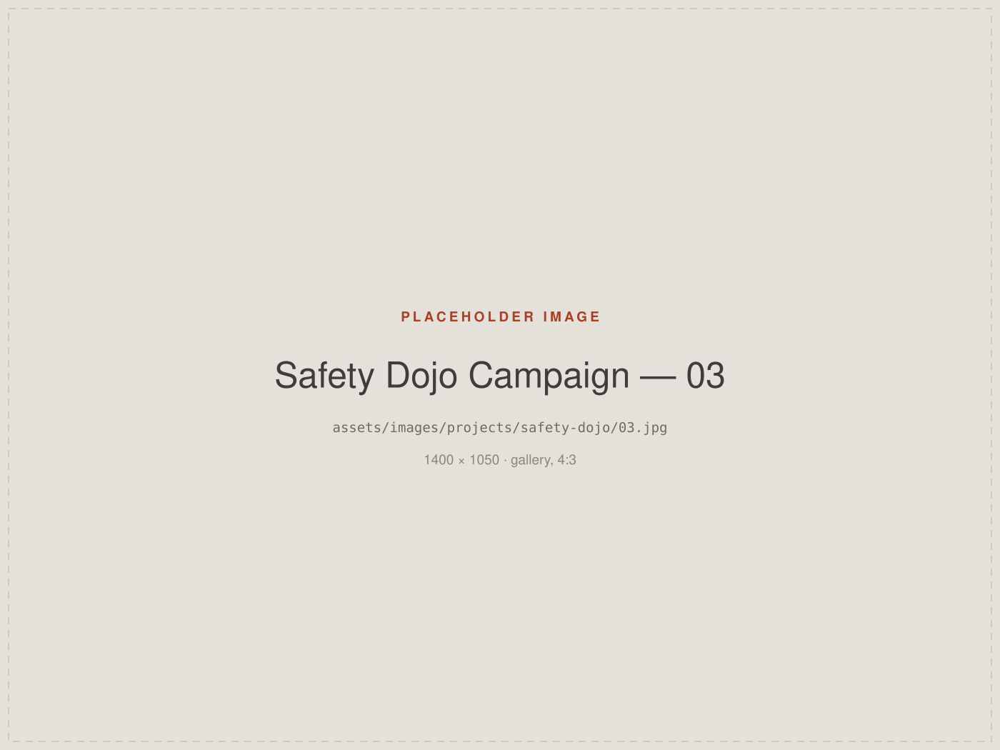

Making Safety Communication More Memorable
Developing a modern visual safety awareness system designed to make important workplace messages clearer, more engaging and easier to remember.
- Role
- Creative direction and design
- Programme
- Safety Dojo — confirm the owning organisation
- Disciplines
- Creative Direction · Campaign Design · Visual Communication
- Format
- A connected series of industrial safety posters

Context
Safety Dojo is a workplace safety awareness programme. Its job is to keep genuinely important messages — about attention, habit and conscious decision-making — present in people's minds while they work.
I developed the visual system for it: a series of industrial safety posters intended to be seen daily, in the places where the risk actually is.
Challenge
Traditional safety communication can become visually repetitive. The same warning triangles, the same stock imagery, the same tone — material that people stop registering precisely because it looks like what they already expect.
A poster that is no longer noticed is not doing its job, however correct its content. So the real problem was attention, not information.
Role
- Creative direction for the series
- Concept development
- Visual language and illustration
- Campaign design and consistency across the set
Approach
Concept
Build a distinctive visual language around awareness and conscious decision-making — the moment of noticing — rather than around hazard symbols alone.
System
Design a connected series rather than individual posters. Shared composition, colour and illustration treatment let each new poster read as part of something recognisable, which is what makes a campaign accumulate rather than reset.
Execution
Modern visual storytelling and illustration, with campaign consistency held across the set. Each poster carries one idea clearly, at the distance and speed people actually read at in a working environment.
Memorability as the design goal
Every decision was measured against a single question: would someone who walks past this every day still register it, and would they remember it later?
Selected work
Placeholders below. Show several posters together so the shared
visual language is visible — see ASSETS.md.


Outcome
Outcome to be provided. No campaign performance data is published here, because none has been verified.